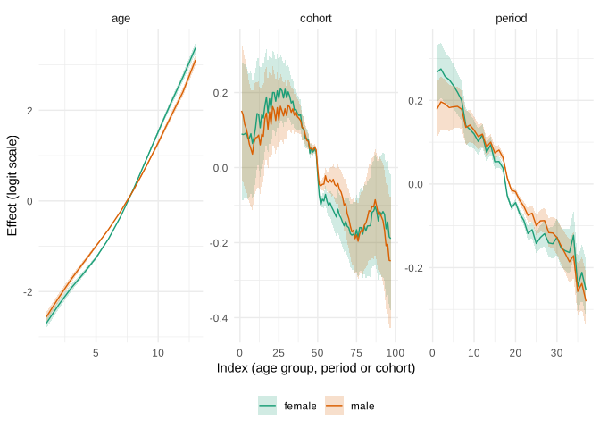
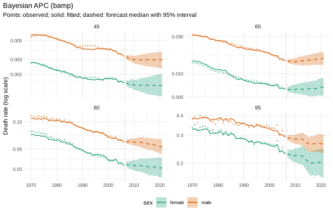
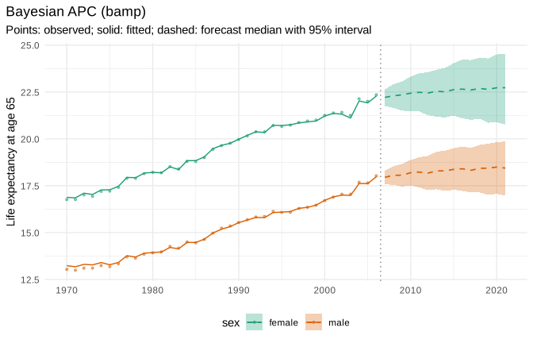
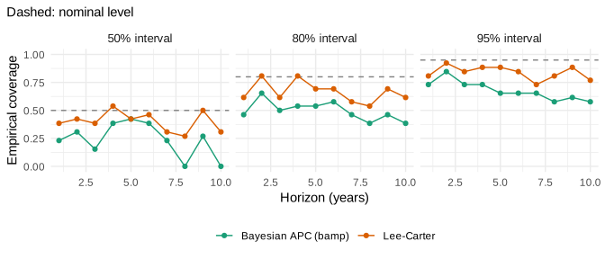

apc_bayes() wraps the bamp package (Schmid and Held
2007): a Bayesian age-period-cohort (APC) model with binomial
likelihood, random walk priors for age, period and cohort effects and
MCMC estimation. Forecasts extrapolate the period and cohort effects as
random walks for every posterior draw, so they include parameter
uncertainty.
Within mortensor, apc_bayes() behaves like every other
model: same mt_fit(), mt_forecast() and
mt_backtest() calls, draws on the single-year grid, life
expectancy path by path, and ensembles.
Data at the resolution of official statistics
We use HMD data for France (demography::fr.mort),
1970-2006, ages 40 and over. To mimic official statistics, deaths are
grouped into 5-year age groups with an open 100+ interval; exposures
stay in single years.
fr <- suppressWarnings(as_mt_data(demography::fr.mort, years = 1970:2006))
fr <- mt_regroup(fr, age = 40:100)
x <- fr
x$obs$deaths <- mt_regroup(fr, age = seq(40, 100, 5))$obs$deaths
x
#> <mt_data> 2 strata by sex, omega = 110
#> deaths 5-year groups 40-99, 100+; periods 1970-2006 (width 1); 962 cells
#> exposure single years 40-99, 100+; periods 1970-2006 (width 1); 4514 cells
#> grid <mt_axis: age, 61 intervals> 40 41 42 43 ... 98 99 100+
#> <mt_axis: period, 37 intervals> 1970 1971 1972 1973 ... 2004 2005 2006bamp is fitted where the deaths were observed: 5-year age groups with
annual periods (periods_per_agegroup = 5, Knorr-Held and
Rainer 2001), so that cohorts are defined by single birth years. The
draws are then mapped to single years of age with shape factors
estimated from the ungrouped training data
(step_ungroup()).
Fit
mcmc_control("fast") runs four chains of 5,000
iterations (burn-in 1,000, thinning 5). The wrapper checks convergence
with bamp::checkConvergence() and refits with longer chains
if needed; a stratum that does not converge is reported as failed
instead of being used.
The default priors are a second-order random walk for age and first-order random walks for period and cohort (see “Choice of priors” below).
prep <- mt_prep(step_ungroup())
set.seed(1)
t0 <- proc.time()
fit <- mt_fit(apc_bayes(mcmc = mcmc_control("fast")), x, prep = prep)
(proc.time() - t0)[["elapsed"]]
#> [1] 187.857
fit$diagnostics
#> stratum status message seconds
#> 1: female ok 91.724
#> 2: male ok exposures rounded (max change 0.002) 92.123Posterior medians and 90% credible intervals of the effects (logit
scale, identified with bamp’s convention), and the Gelman-Rubin
statistics of the chains (rhat, below 1.1 when they have
converged):
eff <- mt_parameters(fit)
eff[, .N, by = .(stratum, parameter)]
#> stratum parameter N
#> 1: female age 13
#> 2: female period 37
#> 3: female cohort 97
#> 4: male age 13
#> 5: male period 37
#> 6: male cohort 97
#> 7: female rhat 4
#> 8: male rhat 4
eff[parameter == "rhat", .(stratum, index, rhat = round(value, 3))]
#> stratum index rhat
#> 1: female age_prec 1.000
#> 2: female period_prec 1.001
#> 3: female cohort_prec 1.000
#> 4: female fitted 1.003
#> 5: male age_prec 1.000
#> 6: male period_prec 1.000
#> 7: male cohort_prec 1.001
#> 8: male fitted 1.004
ggplot2::ggplot(eff[parameter != "rhat"], ggplot2::aes(as.numeric(index), value, colour = stratum, fill = stratum)) +
ggplot2::geom_ribbon(ggplot2::aes(ymin = lower, ymax = upper), alpha = 0.2, colour = NA) +
ggplot2::geom_line() +
ggplot2::facet_wrap(~parameter, scales = "free") +
ggplot2::labs(x = "Index (age group, period or cohort)", y = "Effect (logit scale)", colour = NULL, fill = NULL) +
scale_colour_mortensor(type = "categorical") +
scale_fill_mortensor(type = "categorical") +
theme_mortensor()
Forecast
fc <- mt_forecast(fit, h = 15, n_draws = 1000, seed = 1)
fc
#> <mt_draws> Bayesian APC (bamp); origin 2006; 61 ages x 15 periods (2007-2021) x 2 strata x 1000 draws
mt_summarise(fc, probs = c(0.05, 0.5, 0.95))[age %in% c("50", "70", "90") & period %in% c(2007, 2021),
.(label, age, period, q0.05, q0.5, q0.95)]
#> label age period q0.05 q0.5 q0.95
#> 1: female 50 2007 0.002259593 0.002392918 0.002534141
#> 2: female 70 2007 0.009709563 0.010248314 0.010866396
#> 3: female 90 2007 0.120659174 0.126195457 0.132688883
#> 4: female 50 2021 0.001735352 0.002205172 0.002854203
#> 5: female 70 2021 0.008137643 0.010039733 0.012774818
#> 6: female 90 2021 0.089261774 0.107535427 0.132488865
#> 7: male 50 2007 0.005132545 0.005369951 0.005633194
#> 8: male 70 2007 0.022085599 0.023028383 0.024085731
#> 9: male 90 2007 0.168368010 0.174313201 0.180540241
#> 10: male 50 2021 0.003889091 0.004642916 0.005562774
#> 11: male 70 2021 0.018678210 0.022076199 0.026065872
#> 12: male 90 2021 0.138688300 0.159432212 0.182343753
mt_plot_forecast(fc, ages = c("45", "65", "80", "95"))
mt_plot_life_expectancy(fc, at = 65)
Backtest against Lee-Carter
One forecast origin (1996) with a ten-year horizon, scored against the observed deaths in 5-year age groups:
t0 <- proc.time()
bt <- rbind(
mt_backtest(apc_bayes(mcmc = mcmc_control("fast")), x, origins = 1996, h = 10, prep = prep, n_draws = 500),
mt_backtest(lee_carter(), x, origins = 1996, h = 10, prep = prep, n_draws = 500))
(proc.time() - t0)[["elapsed"]]
#> [1] 139.528
mt_score(bt, by = "model")
#> model crps wis mae rmse mase
#> 1: Bayesian APC (bamp) 0.06653799 0.06054837 0.08837594 0.11378047 3.757348
#> 2: Lee-Carter 0.03656689 0.03295069 0.04982160 0.06588784 2.026045
#> cov50 cov80 cov95 pit_mean n unit
#> 1: 0.2384615 0.4961538 0.6769231 0.2348099 260 log rate
#> 2: 0.4000000 0.6653846 0.8384615 0.5140147 260 log rate
mt_plot_coverage(bt)
In this backtest the APC forecasts are less accurate than Lee-Carter and too high: the mean PIT is well below 0.5 and the 95% intervals cover only about two thirds of the observations. A first-order random walk carries the last period effect forward without a trend, so the decline of mortality after the origin is missed.
Choice of priors
Second-order random walks for period and cohort extrapolate the most recent trends, and their uncertainty grows quickly with the horizon. For French women the 90% forecast interval of the death rate at age 92 in 2021 (15 years ahead) is compared below for both choices:
xf <- x
xf$obs <- lapply(xf$obs, function(o) o[o$stratum == 1])
xf$strata <- xf$strata[1]
fits <- list(
"rw2 / rw1 / rw1 (default)" = fit,
"rw2 / rw2 / rw2" = mt_fit(apc_bayes(period = "rw2", cohort = "rw2", mcmc = mcmc_control("fast")), xf, prep = prep))
rbindlist(lapply(names(fits), function(n) {
f <- mt_forecast(fits[[n]], h = 15, n_draws = 1000, seed = 1)
r <- f$rates[f$age$labels == "92", "2021", "female", ]
data.table(priors = n, q0.05 = quantile(r, 0.05), q0.5 = median(r), q0.95 = quantile(r, 0.95))
}))
#> Warning in check_draws_plausible(arr, fit$age, fit$strata, spec$label):
#> Bayesian APC (bamp): forecast death rates above 1 in 4.1% of the draws (strata
#> female; ages 84, 88, 89, 93). The model is unstable here, often because of
#> sparse counts or a steep trend extrapolated far ahead; consider wider age
#> groups (mt_regroup()), pooling (li_lee(common_by = )), smoothing
#> (step_smooth()) or an ensemble.
#> priors q0.05 q0.5 q0.95
#> 1: rw2 / rw1 / rw1 (default) 0.114750599 0.13814363 0.1692327
#> 2: rw2 / rw2 / rw2 0.003622912 0.08328112 0.6477676With second-order random walks the interval spans two orders of
magnitude, and a few paths reach death rates above 1 (the warning),
which is not useful for planning; with first-order random walks it is
narrow but, as the backtest shows, biased when mortality keeps
declining. Neither choice is right for every dataset. Rolling-origin
backtests are the way to choose priors and the overdispersion term, and
an ensemble with models that carry a drift (ensemble()) is
a way to combine the strengths.
Practical notes
- Runtime: about 1.5 to 3 minutes per stratum with
mcmc_control("fast")for 13 age groups and 37 years, depending on the machine;"final"lets bamp choose the chain length and is several times slower. - Heterogeneity terms (
"rw1+het","rw2+het") are not offered, because bamp 3.0.0 cannot forecast them. - bamp needs whole numbers: deaths and exposures are rounded, and the largest relative change is reported in the diagnostics.
- The binomial likelihood uses exposures as denominators, which is close to the Poisson model for small rates.